Groupe Back-Office : À faire, Tâches, Équipes13 constats : 5 avec propositions dessinées, 8 finitions en tableauSourcedocs/audit-design-2026-11-02.md
On corrige et on unifie, sans changer de direction. Une seule proposition touche une zone gelée, le label contextuel de la barre du haut (back-office-13, marquée « Zone gelée ») ; le bleu des accords et le rouge du 简谱 ne figurent pas dans ce groupe. Deux chantiers de l'audit (§ 4) servent de règle à tout le groupe : le chantier 2, « une seule recette de surface », et le chantier 3, « segmenté pour 2 à 4 vues, pastille pour un filtre ». Chaque proposition est dessinée avec les jetons de globals.css, la police système du site, les libellés de fr.json et zh-CN.json et des noms fictifs.
Ordre de gravité. back-office-1 est le seul « premier coup d'œil » ; viennent ensuite quatre constats « de près » avec propositions (3, 4, 6, 8), puis huit finitions en tableau. Chaque constat montre l'avant (recadrage de la capture réelle), puis les propositions côte à côte ; la recommandée porte la marque verte et la phrase du pourquoi.
À confirmer. Les constats marqués ainsi n'ont pas de verdict sûr : back-office-1 (largeurs de 375 et 360 px calculées depuis une capture à 393 px), back-office-4 (défilement voulu, vide dû aux données fictives), et les finitions 7, 9, 12 et 14. Les menus, mouvements et états de survol ne figurent pas sur les captures statiques.
back-office-1premier coup d'œilÀ confirmer
Téléphone en français : la cloche déborde à droite
Avant
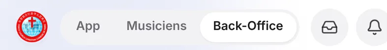
telephone/back-office-fr-clair.png · x 0, y 0, 1 082 × 140telephone/back-office-zh-clair.png · même zone : en 中文 la cloche tienttelephone/back-office-fr-sombre.png · même zone, en sombreordinateur/back-office-fr-sombre.png · x 14, y 66, 234 × 38 · le même sélecteur coupe « Back-Office » dans la barre latérale (voir chants-1)
Mesure sur la capture, en px CSS à 393 px
logo de 16 à 52 · sélecteur de 61 à 304 (243 px) · boîte de messages de 316 à 354 · cloche de 362 à 402.
Le bord droit utile est à 377 (393 moins la marge de 16) : il manque 25 px à 393, 43 px à 375, 58 px à 360.
Cause : segments en px-3.5 et groupe en shrink-0 (SelecteurEspace.tsx:158 et :171).
À confirmer. Les mesures à 375 et 360 px sont calculées depuis la capture de 393 px ; aucune capture n'existe à ces largeurs. Les étiquettes « dépasse / tient » sous chaque dessin sont mesurées sur le dessin de la planche, pas sur le site.
Trait pointillé : bord droit utile (largeur moins la marge de 16 px). Mesuré sur ce dessin (police du système, approche des lettres calibrée sur le sélecteur capturé : 243 px).
Ce qui change
Segments en px-2.5 au lieu de px-3.5 (24 px gagnés) et gap-2 au lieu de gap-3 dans la barre (8 px gagnés) : 32 px au total. En 中文 tout tient déjà.
Pour
Rien ne change de forme ni de libellé. Une ligne dans chacun des deux fichiers.
Contre
Ça tient à 393 px, pas à 375 ni à 360 (téléphones Android courants, iPhone mini). Le prochain onglet ou libellé plus long recasse.
Trait pointillé : bord droit utile (largeur moins la marge de 16 px). Mesuré sur ce dessin (police du système, approche des lettres calibrée sur le sélecteur capturé : 243 px).
Ce qui change
« Back-Office » devient « Gestion » (后台 inchangé en chinois). Environ 26 px gagnés ; dessiné avec le resserrement de A, sans lequel rien ne tient à 360. Mesuré sur le dessin : tient à 393 et 375 px, mais dépasse encore de 3 px à 360 px.
Pour
Un mot que tout le monde comprend, au lieu d'un anglicisme de métier.
Contre
Décision de vocabulaire : touche le nom de la marque dans la barre (« GCC Back-Office »), la barre latérale, les docs et les tests. Il faut l'aval du responsable produit. Le label « GCC Back-Office » de la barre est le label contextuel animé de la navbar (Navbar.tsx:116 et :147) : zone gelée dans son comportement (§ 2 de l'audit, seule sa forme est dégelée).
Effort
Moyen (traductions, tests).
Mesuré sur ce dessin (étiquettes sous chaque rangée) : B avec A tient à 393 et à 375 px ; à 360 px il manque encore 3 px.
C
Icônes pour les espaces non choisis, libellé pour l'espace courant
Recommandée
393 px · zones de toucher de 44 px en pointillé rose ·
Trait pointillé : bord droit utile (largeur moins la marge de 16 px). Mesuré sur ce dessin (police du système, approche des lettres calibrée sur le sélecteur capturé : 243 px).
Ce qui change
Sous 640 px, chaque segment non choisi n'affiche que son icône (maison pour l'App, note pour Musiciens, bouclier pour le Back-Office : celles du mode réduit, SelecteurEspace.tsx:124). Le segment courant garde icône et libellé. Dessiné avec le gap-2 de A dans la barre (8 px) et un px-2.5 sur le segment courant (4 px). Segments icône de 36 px, cible de 44 px par un ::after ; noms en aria-label et title (« App » / 应用, « Musiciens » / 乐手). Mouvement : la pastille active glisse sur un ressort critique (amortissement 1,0, réponse 0,3 s) ; avec prefers-reduced-motion, un fondu de 150 ms (non dessiné ici, la planche est statique).
Pour
Aucun tap en plus ; l'espace courant reste écrit en toutes lettres ; le dessin vient du mode réduit déjà validé.
Contre
Les espaces non choisis se reconnaissent à l'icône seule : libellé au survol et au lecteur d'écran, pas au toucher.
Effort
Petit à moyen (un fichier, un test d'agencement sur les trois appareils).
Mesuré sur ce dessin : C tient à 393, 375 et 360 px en français (marges sous chaque rangée), et en 中文 à 360 px. Sans le gap-2 ni le px-2.5, elle dépassait de 9 px à 360 px.
Pourquoi. C est la seule piste qui tient à 360 px en français sans renommer ni ajouter de tap, et elle réutilise un dessin déjà en place. À coordonner avec chants-1 : la même règle peut s'appliquer au sélecteur de la barre latérale.
Point de vigilance : la marge à 360 px en français n'est que de 3 px (un libellé de plus la fait sauter), et les cibles de 44 px de deux icônes voisines (36 px de large chacune) se recouvrent de 8 px, comme le montre le dessin : à caler dans la tranche.
back-office-3de près
En sombre, « Fait », « Relier » et le segment actif sont noirs sur gris
Avant
Téléphone · telephone/back-office-fr-sombre.png
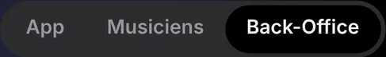
x 168, y 25 · 670 × 100 : sélecteur d'espacex 830, y 955 · 165 × 102 : bouton « Fait »
Ordinateur · ordinateur/back-office-fr-sombre.png
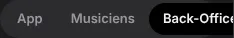
x 14, y 66 · 234 × 38 : sélecteur latéralx 800, y 150 · 100 × 170 : « Fait » et « Relier »
Cause. L'élément « posé » prend bg-background, qui vaut #000 en sombre. Ça concerne button.tsx:18 (variante outline), SelecteurEspace.tsx:133 et :160, et par la même logique Onglets.tsx:85, MenuActions.tsx:70 et EquipesClient.tsx:358.
Les dessins ci-dessous restent en sombre dans les deux modes de la page : le défaut n'existe qu'en sombre, et rien ne change en clair.
Préparer les affiches de NoëlDA · pour le 08/11Fait
Noms du planning94 noms à relierRelier
Bouton à contour posé sur la page noire · segmenté Équipes | Musiciens
Nouvelle tâcheÉquipesMusiciens
Clair : --pose reste blanc 0 0% 100%, rien ne change.
Ce qui change
Nouveau jeton --pose : 0 0% 100% en clair, 240 2% 23% (#3a3a3c) en sombre. Il sert au segment actif (sélecteur et Onglets) et au fond de la variante outline. En sombre, l'ombre shadow-sm du segment actif devient un liseré clair en haut : inset 0 1px 0 rgba(255,255,255,.08).
Pour
Une correction qui vaut pour tous les segmentés et boutons à contour du site, dans le sens du chantier 3. Comme le segmenté d'iOS en sombre : une pastille plus claire que son rail.
Contre
La variante outline sert 60 fois dans 37 fichiers : en sombre tous ces boutons deviennent des pilules gris moyen, y compris sur la page noire (voir « Nouvelle tâche »). À regarder sur une dizaine de pages. Sur le rail #2c2c2e, le pas jusqu'à #3a3a3c est faible : à régler entre #3a3a3c et #48484a.
Effort
Petit en code, moyen en regard.
Pourquoi. Une seule valeur règle le défaut partout où il existe. La maquette montre #3a3a3c et #48484a côte à côte pour choisir.
Préparer les affiches de NoëlDA · pour le 08/11Fait
Noms du planning94 noms à relierRelier
Bouton à contour posé sur la page noire · segmenté Équipes | Musiciens
Nouvelle tâcheÉquipesMusiciens
Ce qui change
dark:bg-secondary (#2c2c2e) sur les boutons de RangeeAFaire.tsx:40, et dark:bg-white/10 sur le segment actif du sélecteur. Le bouton « Nouvelle tâche » et le segmenté Équipes | Musiciens gardent le défaut.
Pour
On ne touche que le back-office : aucun risque ailleurs.
Contre
Une recette de plus, et un blanc à 10 % écrit à la main : l'inverse de l'unification demandée. Les autres segmentés du site gardent le défaut.
Effort
Petit.
C
Inverser en sombre
C · segment actif en encre inversée, « Fait » et « Relier » en secondary plein
Préparer les affiches de NoëlDA · pour le 08/11Fait
Noms du planning94 noms à relierRelier
Bouton à contour posé sur la page noire · segmenté Équipes | Musiciens
Nouvelle tâcheÉquipesMusiciens
Ce qui change
Le segment actif passe à l'encre inversée (bg-foreground text-background, #f2f2f7 avec texte #1c1c1e), comme la pastille « Tout ». « Fait » et « Relier » passent en secondary plein, sans contour.
Pour
Contraste maximal.
Contre
En sombre, le segmenté et la pastille de filtre deviennent identiques, alors que le chantier 3 veut les distinguer. Le segment blanc crie autant qu'un bouton principal.
Effort
Petit.
back-office-4de prèsÀ confirmer
Équipes en bandeau : colonne coupée au bord et vide en bas
Avant
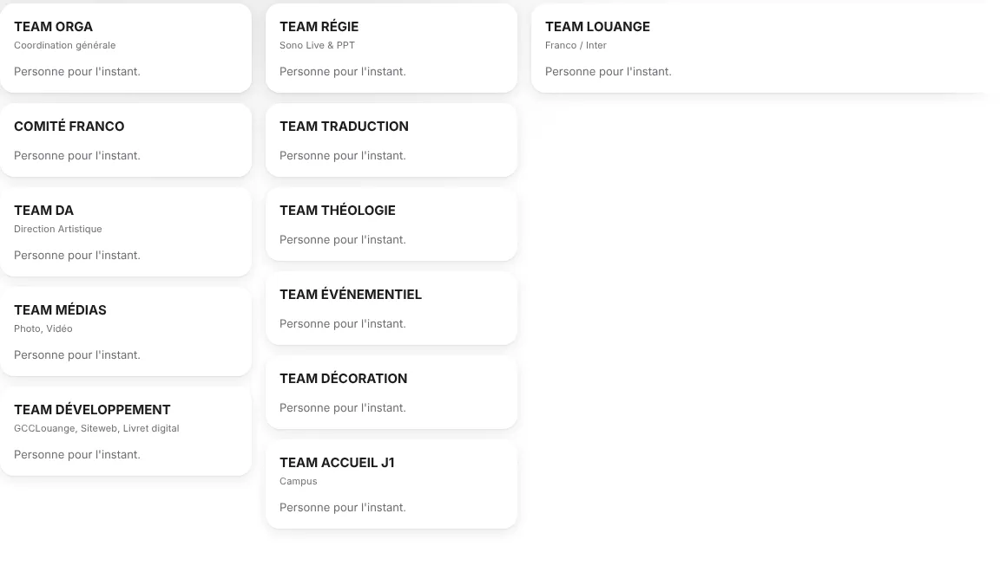
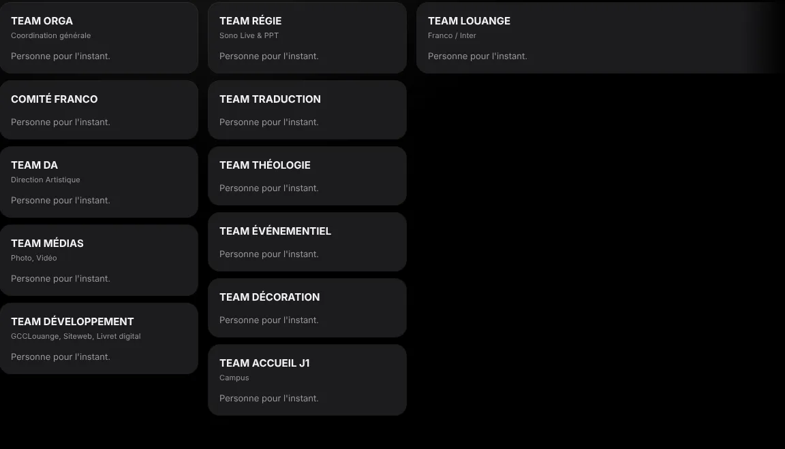
ordinateur-1440/equipes-fr-clair.png · x 288, y 240, 1 152 × 660
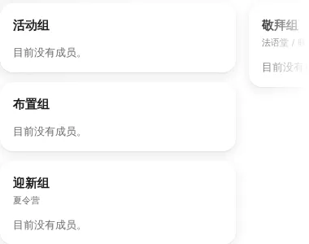
ordinateur/equipes-zh-clair.png · x 900, y 240, 380 × 300 · à droite, la colonne 敬拜组 est coupée et le fondu se voit à peine
« TEAM LOUANGE » va de x ≈ 900 jusqu'au bord de l'écran, au-delà de la marge de 1 400. Les colonnes comptent 5, 6 et 1 cartes. En 中文, « 敬拜组 » est à moitié visible et le fondu se voit à peine (blanc sur blanc).
Le défilement horizontal est voulu (Q12), et le vide vient en partie des données fictives : de vraies cartes avec leurs membres seront plus hautes.
À confirmer. Le défilement horizontal est voulu et le vide vient en partie des données fictives (pas de membres). À regarder à l'œil avec de vraies cartes avant de choisir entre A et B.
A
Un bandeau qui finit sur un bord de colonne
Recommandée
Ordinateur 1 440 px · zone de contenu de 1 112 px (1 192 px moins les marges de 40 px) : 3 colonnes entières de 360 px, la quatrième (EDD) hors champ
4ᵉ colonne (EDD) hors champ : la flèche ronde de l'index est le seul indice
TEAM ORGACoordination généralePersonne pour l'instant.
COMITÉ FRANCOPersonne pour l'instant.
TEAM DADirection artistiquePersonne pour l'instant.
TEAM MÉDIASPhoto, VidéoPersonne pour l'instant.
TEAM DÉVELOPPEMENTGCCLouange, Siteweb, Livret digitalPersonne pour l'instant.
TEAM RÉGIESono Live & PPTPersonne pour l'instant.
TEAM TRADUCTIONPersonne pour l'instant.
TEAM THÉOLOGIEPersonne pour l'instant.
TEAM ÉVÉNEMENTIELPersonne pour l'instant.
TEAM DÉCORATIONPersonne pour l'instant.
TEAM ACCUEIL J1CampusPersonne pour l'instant.
TEAM LOUANGEFranco / InterPersonne pour l'instant.
Ce qui change
Dès 1 024 px, la colonne Louange (et EDD) prend la largeur des autres au lieu de la moitié de la zone (BandeauEquipes.tsx:235-236, on retire lg:/xl:w-[calc(…)/2]). Les colonnes font au moins 290 px, calées sur un nombre entier dans la zone : n = plancher((largeur + 16) / 306), puis largeur = (100cqw − (n − 1) × 16) / n, soit ici, sur 1 112 px, 3 colonnes de 360 px et non de 290. Le bandeau est rogné à la marge, il ne va plus jusqu'au bord de l'écran. Le fondu ne s'affiche que si une colonne est réellement coupée.
Pour
Garde Q12 et l'accroche aux colonnes. Plus de demi-carte au bord.
Contre
Le calcul est en CSS de conteneur, et les tests du bandeau sont à revoir. Le vide sous une colonne courte reste (colonne Louange).
Effort
Moyen.
Pourquoi. Elle corrige ce qui est vraiment faux (la coupe hors marge, la colonne Louange double) sans rouvrir Q12. B devient une question pour le responsable produit si le vide gêne encore avec de vraies données.
Point de vigilance : avec 3 colonnes entières, la quatrième est entièrement hors champ, sans demi-carte ni fondu pour l'annoncer (seule la flèche ronde reste), et la tablette portrait (colonne Louange pleine largeur, BandeauEquipes.tsx:235) n'est dessinée pour aucune piste.
B
Une grille verticale sur ordinateur
Ordinateur 1 440 px · colonnes de journal de 280 px minimum (3 colonnes ici), défilement vertical
TEAM ORGACoordination généralePersonne pour l'instant.
COMITÉ FRANCOPersonne pour l'instant.
TEAM DADirection artistiquePersonne pour l'instant.
TEAM MÉDIASPhoto, VidéoPersonne pour l'instant.
TEAM DÉVELOPPEMENTGCCLouange, Siteweb, Livret digitalPersonne pour l'instant.
TEAM RÉGIESono Live & PPTPersonne pour l'instant.
TEAM TRADUCTIONPersonne pour l'instant.
TEAM THÉOLOGIEPersonne pour l'instant.
TEAM ÉVÉNEMENTIELPersonne pour l'instant.
TEAM DÉCORATIONPersonne pour l'instant.
TEAM ACCUEIL J1CampusPersonne pour l'instant.
TEAM LOUANGEFranco / InterPersonne pour l'instant.
TEAM EDDÉcole du DimanchePersonne pour l'instant.
suite en défilant vers le bas
Ce qui change
Dès 1 024 px, plus de bandeau : columns: 280px (colonnes de journal), défilement vertical, et les pilules d'index font défiler vers la carte. Les flèches disparaissent (règle back-office-5 du même coup).
Pour
Ni coupe ni vide, quel que soit le nombre de cartes.
Contre
Revient sur Q12, décidé par le responsable produit : il faut son aval.
Effort
Gros (rangerEnColonnes, tests du bandeau, trois dispositions).
C
Coupe nette sans rien changer d'autre
Ordinateur 1 440 px · colonnes de 290 px, la quatrième rognée à la marge, fondu de 64 px
TEAM ORGACoordination généralePersonne pour l'instant.
COMITÉ FRANCOPersonne pour l'instant.
TEAM DADirection artistiquePersonne pour l'instant.
TEAM MÉDIASPhoto, VidéoPersonne pour l'instant.
TEAM DÉVELOPPEMENTGCCLouange, Siteweb, Livret digitalPersonne pour l'instant.
TEAM RÉGIESono Live & PPTPersonne pour l'instant.
TEAM TRADUCTIONPersonne pour l'instant.
TEAM THÉOLOGIEPersonne pour l'instant.
TEAM ÉVÉNEMENTIELPersonne pour l'instant.
TEAM DÉCORATIONPersonne pour l'instant.
TEAM ACCUEIL J1CampusPersonne pour l'instant.
TEAM LOUANGEFranco / InterPersonne pour l'instant.
TEAM EDDÉcole du DimanchePersonne pour l'instant.
Ce qui change
Bandeau rogné à la marge, fondu élargi à 64 px sur toutes les dispositions et peint en --background, Louange à 290 px.
Pour
Rapide.
Contre
La coupe au milieu d'une carte reste, simplement mieux cachée. Le vide aussi.
Effort
Petit.
back-office-6de près
Trois recettes de carte dans le même espace
Avant
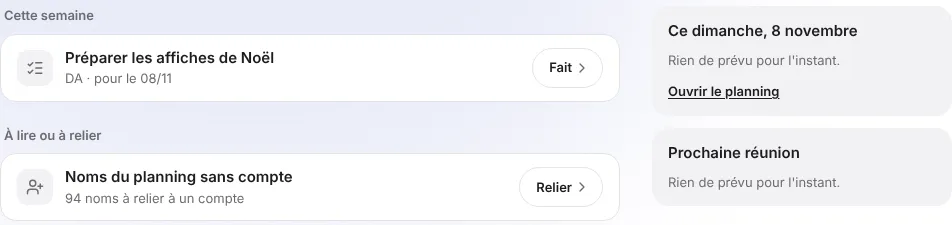
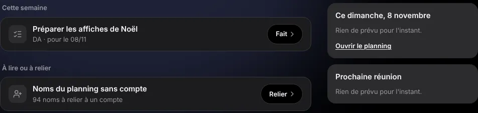
ordinateur/back-office-fr-clair.png · x 288, y 110, 952 × 225
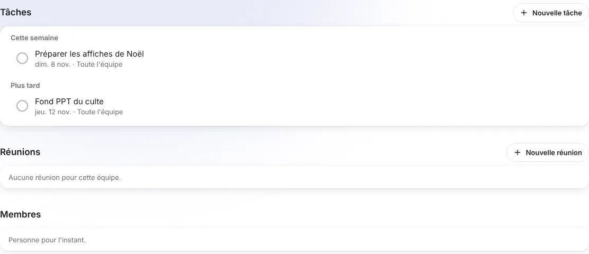
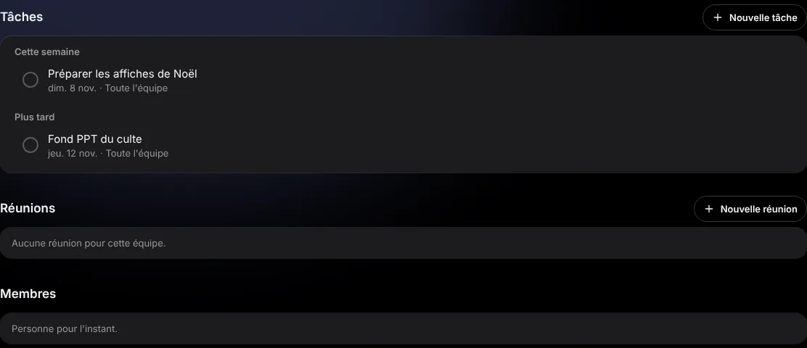
ordinateur-1440/taches-fr-clair.png · x 288, y 100, 1 112 × 480
Trois recettes dans le même espace : un filet sur fond blanc (AFaire.tsx:92), un aplat gris sans filet (ColonneDroite.tsx:17, « Ce dimanche », « Prochaine réunion »), des cartes à ombre raised (PageEquipe.tsx:40). Chantier 2 de l'audit : « une seule recette de surface ».
A
Le filet partout
Ordinateur · À faire (zone réduite à 760 px) et fiche d'équipe
Cette semaine
Préparer les affiches de NoëlDA · pour le 08/11Fait
À lire ou à relier
Noms du planning sans compte94 noms à relier à un compteRelier
Ce dimanche, 8 novembreRien de prévu pour l'instant.Ouvrir le planning
Prochaine réunionRien de prévu pour l'instant.
Équipes
DA
Tâches
Nouvelle tâche
Cette semaine
Préparer les affiches de Noëldim. 8 nov. · Toute l'équipe
Plus tard
Fond PPT du cultejeu. 12 nov. · Toute l'équipe
Réunions
Nouvelle réunion
Aucune réunion pour cette équipe.
Membres
Personne pour l'instant.
Ce qui change
PageEquipe (CARTE) et ColonneDroite passent à rounded-2xl border border-border bg-card, comme À faire.
Pour
Deux fichiers, aucun jeton nouveau, cohérent avec un espace de listes d'actions.
Contre
Blanc sur blanc séparé par un filet : c'est le côté « document » qu'on veut quitter. Le back-office se distingue des cartes raised de l'App.
Effort
Petit.
B
La recette du chantier 2
Recommandée
Ordinateur · À faire (zone réduite à 760 px) et fiche d'équipe
Cette semaine
Préparer les affiches de NoëlDA · pour le 08/11Fait
À lire ou à relier
Noms du planning sans compte94 noms à relier à un compteRelier
Ce dimanche, 8 novembreRien de prévu pour l'instant.Ouvrir le planning
Prochaine réunionRien de prévu pour l'instant.
Équipes
DA
Tâches
Nouvelle tâche
Cette semaine
Préparer les affiches de Noëldim. 8 nov. · Toute l'équipe
Plus tard
Fond PPT du cultejeu. 12 nov. · Toute l'équipe
Réunions
Nouvelle réunion
Aucune réunion pour cette équipe.
Membres
Personne pour l'instant.
Ce que B ne dessinait pas, en clair : la même page grise sous l'index des équipes et sous un segmenté, dont les rails et les pastilles sont en --secondary (#f2f2f4), la couleur du fond. Le halo du haut de page se pose sur le gris.
Équipes
ÉquipesMusiciens
ÉglisePaixFidélité
OrgaComité FrancoDAMédiasDéveloppement
Préparer les affiches de NoëlDA · pour le 08/11Fait
Ce qui change
Le fond de page du back-office passe au gris de groupe (#f2f2f4, --secondary ou un jeton --fond-groupe) en clair. Les groupes deviennent blancs, rounded-2xl, sans filet ni ombre : À faire, colonne de droite, fiche d'équipe. En sombre : page #000 et groupes #1c1c1e (--card), déjà en place. L'ombre reste réservée à ce qui flotte (barre d'onglets, menus).
Pour
La profondeur vient de la valeur, pas du trait : la recette que l'audit propose pour tout le site. La colonne de droite devient un groupe comme les autres.
Contre
Dépend de la question encore ouverte « fond de groupe gris en clair ». Tant que le chantier 2 n'est pas fait, le back-office diffère de l'App. Le dégradé du haut de page se pose sur le gris (dessiné plus haut, à juger à l'œil).
Effort
Moyen (un jeton, trois ou quatre fichiers, quatre dispositions).
Pourquoi. Le back-office sert de premier essai du chantier 2 avec le même jeton, si le responsable produit dit oui au fond de groupe gris. Sinon A, en attendant.
Point de vigilance : le gris de fond de page ne peut pas être --secondary (#f2f2f4), qui sert déjà de fond aux rails segmentés et aux pastilles d'index : posés dessus, ils s'effacent (dessin ci-dessus) ; il faut une valeur de fond distincte (--fond-groupe), ou des rails et des pastilles qui changent de valeur.
C
L'ombre partout
Ordinateur · À faire (zone réduite à 760 px) et fiche d'équipe
Cette semaine
Préparer les affiches de NoëlDA · pour le 08/11Fait
À lire ou à relier
Noms du planning sans compte94 noms à relier à un compteRelier
Ce dimanche, 8 novembreRien de prévu pour l'instant.Ouvrir le planning
Prochaine réunionRien de prévu pour l'instant.
Équipes
DA
Tâches
Nouvelle tâche
Cette semaine
Préparer les affiches de Noëldim. 8 nov. · Toute l'équipe
Plus tard
Fond PPT du cultejeu. 12 nov. · Toute l'équipe
Réunions
Nouvelle réunion
Aucune réunion pour cette équipe.
Membres
Personne pour l'instant.
Ce qui change
Les rangées d'À faire et la colonne de droite passent en raised.
Pour
Aligné sur les cartes de l'App.
Contre
Une ombre sous chaque bloc statique : c'est le kit de cartes SaaS, contraire au chantier 2.
Effort
Petit.
back-office-8de près
Page Équipes (App) : aucun onglet de la barre n'est allumé
Avant
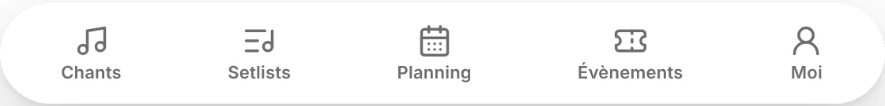
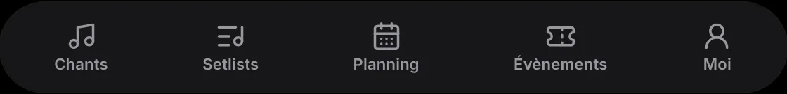
tablette/equipes-fr-clair.png · x 250, y 2 000, 1 120 × 135
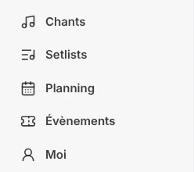
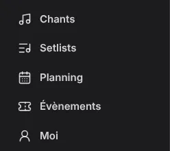
ordinateur-1440/equipes-fr-clair.png · x 0, y 110, 248 × 220
Aucun onglet de la barre n'est allumé, ni en bas, ni dans la barre latérale. Cause : navigation.ts:41, actifSur de Moi ne contient pas /equipes.
Sur ordinateur, ni la barre latérale ni le sélecteur n'allument « Équipes » quand on arrive par l'App : couvert par A.
A
Allumer Moi
Téléphone · page Équipes (sous la barre du haut) et barre latérale de l'ordinateur
Équipes
Organigramme GCC Franco 2026
ÉglisePaixFidélitéBonté
ÉquipesMusiciens
TEAM ORGACoordination généralePersonne pour l'instant.
ChantsSetlistsPlanningÉvènementsMoi
GCC Louange
ChantsSetlistsPlanningÉvènementsMoi
Ce qui change
Ajouter "/equipes" à actifSur de Moi (couvre aussi /equipes/<id>).
Pour
Une ligne, fidèle au retour de la fiche, qui ramène déjà à Moi.
Contre
Aucun notable.
Effort
Petit.
B
A, plus un retour sur l'index
Recommandée
Téléphone · page Équipes (sous la barre du haut) et barre latérale de l'ordinateur
Moi
Équipes
Organigramme GCC Franco 2026
ÉglisePaixFidélitéBonté
ÉquipesMusiciens
TEAM ORGACoordination généralePersonne pour l'instant.
ChantsSetlistsPlanningÉvènementsMoi
GCC Louange
ChantsSetlistsPlanningÉvènementsMoi
Ce qui change
En plus de A, l'en-tête de /equipes (App) reçoit le retour « ‹ Moi » / « ‹ 我 », comme le Guide (guide/page.tsx:178).
Pour
La page répond à « où suis-je » et à « comment je sors », avec le même idiome que les autres sous-pages de Moi.
Contre
Une ligne de plus en tête d'une page déjà chargée de pilules (voir back-office-7).
Effort
Petit.
Pourquoi. Le retour « ‹ Moi » est déjà la règle des sous-pages de Moi (Guide). Sans lui, Équipes est la seule de ces sous-pages sans retour.
finitions
Tableau des finitions
Identifiant
Constat
Correction recommandée
Alternative
back-office-5 finition
La flèche ronde reste au bout de la première rangée quand les filtres passent à la ligne
Sur la nav de l'index (BandeauEquipes.tsx:171), passer de items-start à items-end, pour que ‹ › se rangent au bout de la dernière rangée. Habiller les flèches comme les pilules (bg-secondary, h-9, sans raised ni ombre isolée), en gardant une cible de 44 px par ::after.
Après : items-end, flèche habillée comme les pilules (36 px de dessin, cible de 44 px par ::after)
Retirer les flèches au pointeur fin (molette, pavé tactile, clavier et fondu suffisent). Les remettre sur les cartes contredirait BO-G 6 (docs/spec-back-office-piste-a.md).
Avant · Index des équipes sur deux rangées : la flèche ronde est en haut à droite
back-office-7 finition À confirmer
Équipes au téléphone : « Église » et « Équipes » ont le même habillage
« Équipes | Musiciens » (团队 | 乐手) passe en segmenté OngletsRail avec cible44, le composant de Setlists et de Mes services (à la place de Pilules, EquipesClient.tsx:112-118). Les pastilles colorées restent pour « Église / Paix / … », les petites pilules pour l'index. Fondu de 20 px au bord droit des deux rangées qui défilent. Trois niveaux lisibles : la vue, le groupe, l'équipe.
Après : la vue (segmenté 44 px), le groupe (pastilles colorées), l'équipe (petites pilules), fondu de 20 px à droite
ÉquipesMusiciens
ÉglisePaixFidélitéBonté
OrgaComité FrancoDAMédiasDéveloppement
Réduire « Église / Paix / … » à une seule pastille-menu (« Église ▾ ») pour supprimer une rangée ; les groupes et leurs couleurs passent alors derrière un tap.
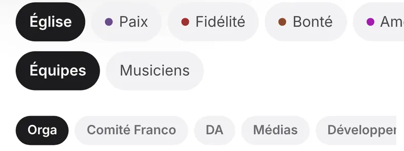
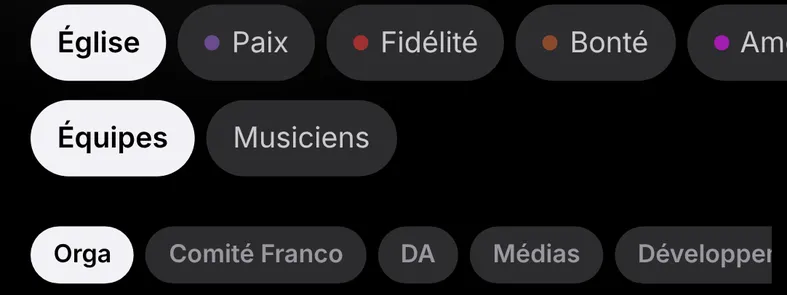
Avant · Téléphone : pastilles Église, Paix, Fidélité…, puis Équipes et Musiciens, puis les petites pilules d'index
back-office-9 finition À confirmer
« ‹ Équipes » et « Fait » / « Relier » sous 44 px
Agrandir la zone de toucher sans changer le dessin. Sur Retour (EnTetePage.tsx:23, composant commun à tout le site) : relative after:absolute after:-inset-y-3 after:-inset-x-2 after:content-['']. Sur les verbes de RangeeAFaire.tsx:40 : un ::after de −2 px en hauteur, soit 40 + 4 = 44 px.
Après : zone de toucher en pointillé (« ‹ Équipes » : −12 px en hauteur, −8 px sur les côtés ; « Fait » : 40 + 4 = 44 px), dessin inchangé
ÉquipesFait
[@media(pointer:coarse)]:min-h-11 sur les verbes : visible, mais grossit les rangées.
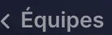
Avant · Retour « ‹ Équipes » et titre DA, au téléphone
back-office-10 finition
Fiche d'équipe à 1 440 px : tâches à gauche et « Nouvelle tâche » à l'autre bout
Quand la barre latérale est affichée, deux colonnes comme À faire (grid-cols-[minmax(0,1fr)_300px] gap-8, AFaire.tsx:60) : Tâches à gauche, Réunions et Membres à droite.
Après : deux colonnes comme À faire, grid-cols-[minmax(0,1fr)_300px] gap-8 (dessin réduit)
Tâches
Nouvelle tâche
Cette semaine
Préparer les affiches de Noëldim. 8 nov. · Toute l'équipe
Réunions
Aucune réunion pour cette équipe.
Membres
Personne pour l'instant.
Plafonner le corps à 720 px (règle de largeur du chantier 4), ce qui reviendrait sur BO-G 2 (docs/spec-back-office-piste-a.md).
Avant · Fiche d'équipe à 1 440 px : le bouton Nouvelle tâche est à l'autre bout de la page
back-office-11 finition
Titre « DA » nu alors que la liste dit « TEAM DA »
Garder le titre court (« DA » / 美工组) et poser equipes.soustitre.<id> en sous-titre (« Direction artistique » / 美术设计 ; la chaîne actuelle porte deux majuscules, à corriger dans la tranche), sur sa propre ligne au-dessus du nombre de membres. Pas de point médian entre les deux.
Après : titre court, sous-titre equipes.soustitre.da sur sa propre ligne, au-dessus du nombre de membres (noms et effectif fictifs)
Équipes
DA
Direction artistique4 personnes
团队
美工组
美术设计4 人
Titre « Team DA » en casse normale (si la question des capitales est tranchée dans ce sens) ; le chinois reste 美工组.
Avant · Retour « ‹ Équipes » et titre DA nu
back-office-12 finition À confirmer
Coupes disgracieuses au téléphone en français
text-pretty sur le sous-titre de la porte (AFaire.tsx:73) et sur le titre des rangées (RangeeAFaire.tsx:31). « Noël » ne reste plus seul sur sa ligne.
Point de vigilance : Safari avant la version 26 ignore text-wrap: pretty et le public est surtout sur iPhone : la réécriture du sous-titre (colonne de droite) est la seule correction qui vaut partout.
Après : text-pretty sur le sous-titre et sur le titre des rangées (rendu : Chrome 117 et plus ; ailleurs, la coupe habituelle)
Scène des fêtes
Réservations et ordre de passage · Pâques, Noël
Noms du planning sans compte94 noms à relier à un compte
Réécrire le sous-titre, par exemple « Pâques et Noël : réservations et ordre de passage » (en chinois, 复活节、圣诞节：预约与出场顺序), ce qui retire aussi le point médian.
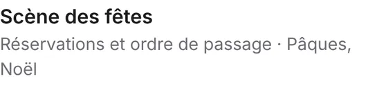
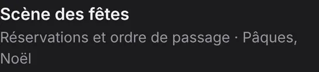
Avant · Sous-titre de la porte : « Noël » reste seul sur sa ligne
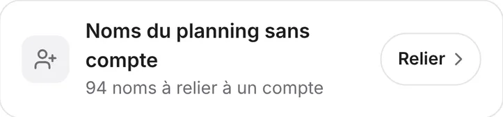
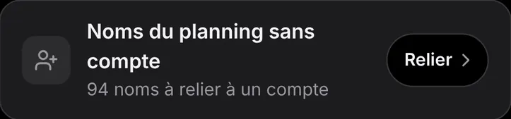
Avant · Titre de rangée coupé : « compte » seul sur la deuxième ligne
back-office-13 finition Zone gelée
« GCC Back-Office » répété à côté de l'onglet « Back-Office »
Quand le sélecteur d'espace est affiché, la marque n'écrit que « GCC » (Navbar.tsx:116 et :147, plus le pendant dans la barre latérale). Le sélecteur dit déjà l'espace.
Point de vigilance : « GCC Back-Office » est le label contextuel, coloré et animé de la barre du haut : le § 2 de l'audit ne dégèle que sa forme (taille, troncature, place), pas son comportement ; réduire la marque à « GCC » le supprime, il faut donc un dégel explicite.
Après : la marque n'écrit que « GCC » quand le sélecteur d'espace est affiché
Masquer le nom de marque en entier sous lg pour un responsable : cela ne change que sa place, déjà dégelée, comme sur téléphone (max-sm:hidden).
Avant · Barre de la tablette : GCC Back-Office puis l'onglet Back-Office
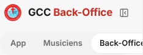
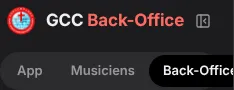
Avant · Barre latérale : GCC Back-Office puis l'onglet Back-Office
back-office-14 finition À confirmer
Écarts verticaux inégaux sur Équipes en bandeau
Un seul pas de 16 px entre le sous-titre, l'index et les cartes. Entre deux rangées de pilules, gap-y-2 (8 px) seulement au pointeur fin : au toucher, il faut garder 14 px, sinon les zones de 44 px des pilules se chevauchent.
Après : un seul pas de 16 px (repères roses) entre sous-titre, index et cartes ; 8 px entre les deux rangées de pilules au pointeur fin
Avant · Page Équipes : écarts inégaux entre sous-titre, pastilles de groupe, index et cartes
Ce que le directeur artistique n'a pas pu voir
Téléphones étroits. Aucune capture à 375 ou 360 px : les débordements de back-office-1 sont des mesures sur la capture de 393 px.
Captures manquantes. Pas de telephone/taches-zh-clair.png ; telephone/taches-fr-sombre.png et les captures tablette paysage d'Équipes n'ont pas été ouvertes.
Données fictives. Pas de membres : cela pèse sur le vide de back-office-4 et de back-office-10.
États non capturés. Survol, appui et mouvement de la pastille du segmenté (non dessinés ici : la planche est statique).
Constat absent de la liste. Sur ordinateur, ni la barre latérale ni le sélecteur n'allument « Équipes » quand on arrive par l'App : couvert par back-office-8, A.
À décider
Une ligne par choix, avec la recommandation. Les quatre premières sont les questions du directeur artistique.
back-office-6Fond de groupe gris en clair : oui ou non ? Question 1 du directeur artistiqueProposition : B, et le back-office est le premier essai du chantier 2 avec le même jeton ; sinon A en attendant.
back-office-4Bandeau des équipes : garder Q12 et corriger (A), ou passer en grille verticale sur ordinateur (B) ? Question 2Proposition : A : garder Q12. B redevient une question si le vide gêne encore avec de vraies cartes.
back-office-1Renommer « Back-Office » en « Gestion » en français (B) ? Question 3Proposition : Ne pas renommer, et prendre C.
back-office-3Jeton --pose sur tout le site en sombre (A), ou seulement dans le back-office (B) ? Question 4Proposition : Tout le site, après un regard sur les pages qui ont des boutons à contour ; valeur à choisir à l'œil entre #3a3a3c et #48484a.
back-office-1C n'a que quelques pixels de marge à 360 px en français, et deux cibles de 44 px voisines se recouvrent : on garde C avec gap-2 et px-2.5 ?Proposition : Oui, C avec gap-2 et px-2.5, puis mesurer le sélecteur à 375 et 360 px sur un appareil ou en émulation avant de coder (les mesures de cette planche viennent d'une capture à 393 px) et caler les cibles sans recouvrement.
back-office-13Réduire « GCC Back-Office » à « GCC » touche le label contextuel animé de la navbar, zone gelée : dégeler ce label, ou prendre l'alternative (masquer le nom sous lg) ?Proposition : La recommandée seulement si le dégel du label est accordé ; sinon l'alternative, qui ne change que la place.
back-office-4, 7, 9, 12, 14Cinq verdicts incertains : à confirmer à l'œil sur appareil avant de les coder.Proposition : Les prendre dans la tranche de finitions, avec un regard sur téléphone, sauf back-office-4 (choix A ou B ci-dessus).